Integrate OpenAI into Your Code with Semantic Kernel
Kevin Feasel (@feaselkl)https://csmore.info/on/sk
Who Am I? What Am I Doing Here?


Motivation
My goals in this talk:
- Review requirements for Azure OpenAI (AOAI)
- Gain an introduction to Semantic Kernel
- Build a simple Python application that uses Semantic Kernel
- Extend an existing C# Web API to use Semantic Kernel
What We'll Do
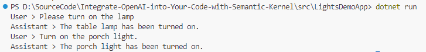What We'll Do
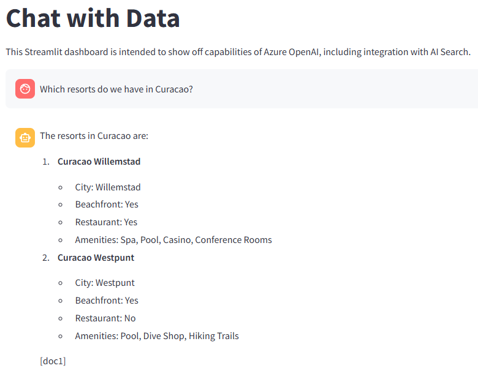What We'll Do
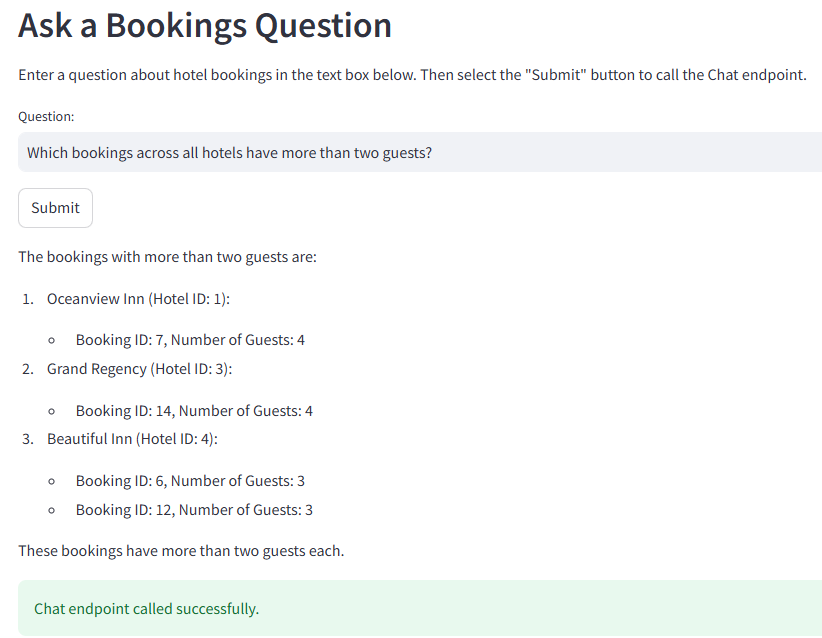What We'll Do
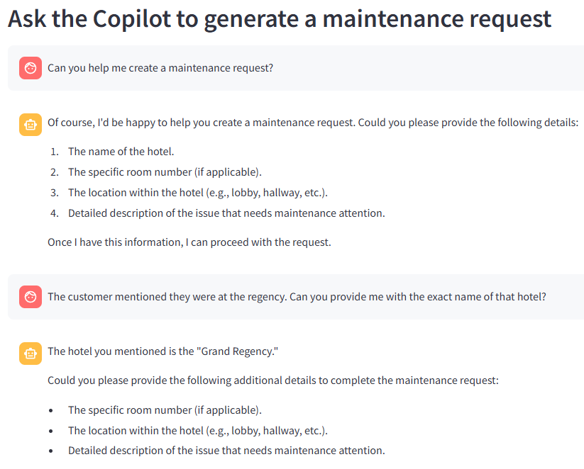Danger, Will Robinson!
Semantic Kernel is not 100% stable:
- Semantic Kernel is still fairly new and under heavy development
- Expect frequent API changes--there have been multiple complete API rewrites
- Some samples exist but make sure to check the date/version used!
Agenda
- The Basics of Azure OpenAI
- An Overview of Semantic Kernel
- Trying out Semantic Kernel
- Semantic Kernel in Practice
Azure OpenAI
Azure OpenAI (AOAI) is an Azure service that makes use of large language models from OpenAI. AOAI features and models typically come 3-6 months after OpenAI releases them.
If you have OpenAI credentials and use one of their services, that will not work for Azure OpenAI. These are entirely different services.
You will need a valid Azure subscription (not a free one) to use Azure OpenAI.
Choosing a Model
The Azure AI Foundry (https://ai.azure.com) includes a variety of models.
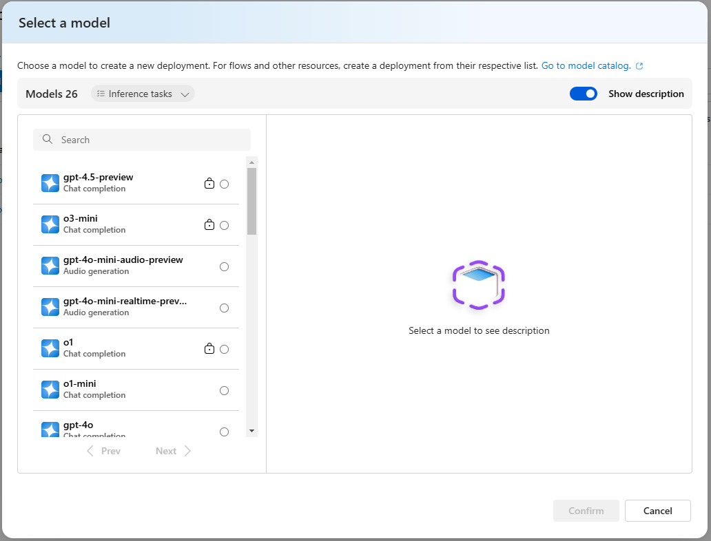
Choosing a Model - Cost
Prices can vary drastically between models. Simple pricing in East US (as of 2025-03-04) using basic models:
| Model Name | Purpose | Pricing (1M tokens) |
| o1 | Reasoning | $15 in, $60 out |
| o3 mini | Code/math/science | $1.10 in, $4.40 out |
| 4o | Multi-modal | $2.50 in, $10 out |
| GPT-4o-mini | Cost efficiency | $0.15 in, $0.60 out |
| GPT-4 | General purpose (legacy) | $30 in, $60 out |
| GPT-3.5-Turbo | General purpose (legacy) | $1.5 in, $2 out |
Choosing a Model - Other Considerations
In addition to cost, there are other considerations:
- Regional availability - Not all models are always available in all regions
- Model availability - Not all models are always available to your subscription. Azure provides a breakdown
- Response time - There is a distinct trade-off between speed, accuracy, and cost
Create an Azure OpenAI Service
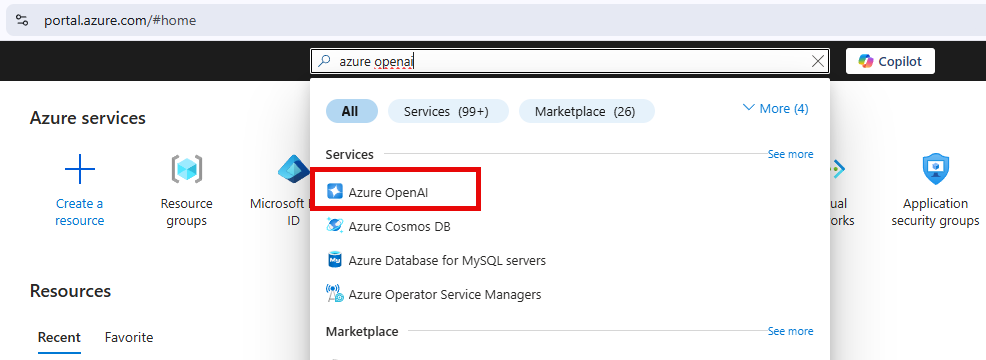
Create an Azure OpenAI Service
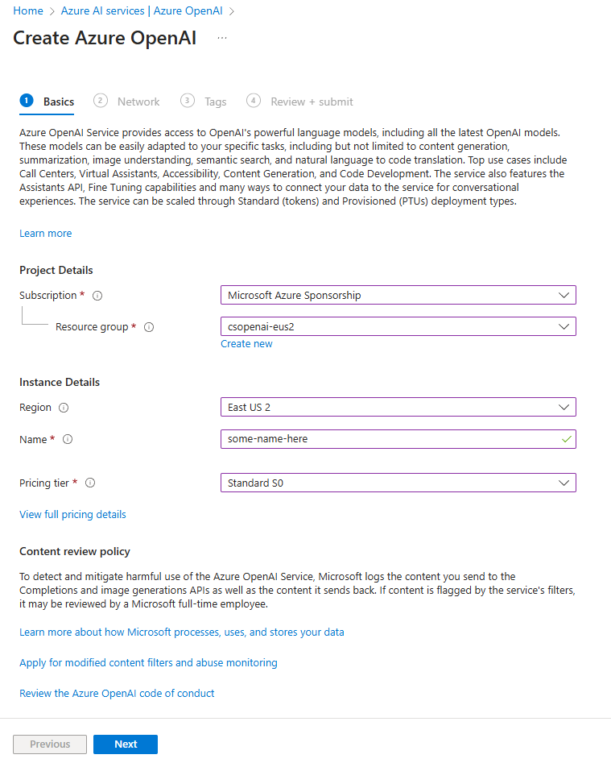
Using the Azure OpenAI Service
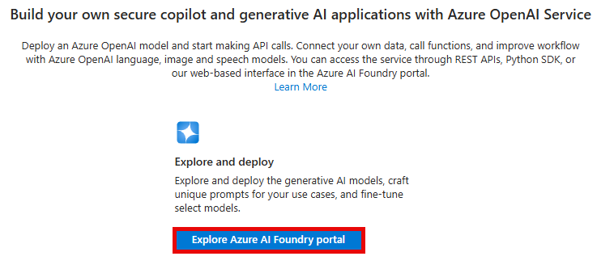
Using the Azure OpenAI Service
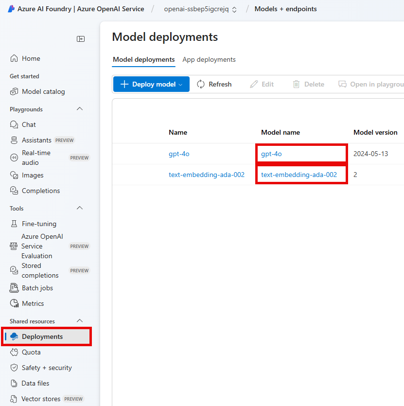
Embedding vs GPT Models
You'll need both an embedding model and a generative pre-trained transformer (GPT) model for Semantic Kernel.
Embedding models allow us to vectorize text. The most common are text-embedding-ada-002 and text-embedding-3 (large or small).
GPT models allow us to generate output. GPT models need input text that is already vectorized.
Tokens, Vectors, and Embeddings
Language models deal in tokens, unique parts of words.
An example:
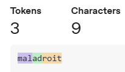
Rule of thumb: in English, the average token is ~4 characters long.
Tokens, Vectors, and Embeddings
Each token corresponds to a vector. A vector is a numeric representation of text. GPT models have vectors of 1536 floats, meaning there are 1536 dimensions for comparison.
The main benefit to vectorization is that it retains much of the semantic context of words (or collections of tokens): similar vectors relate to similar concepts.
Tokens, Vectors, and Embeddings
One common algorithm for comparison is cosine similarity. It compares the angle of two vectors. A simplified presentation of this idea:
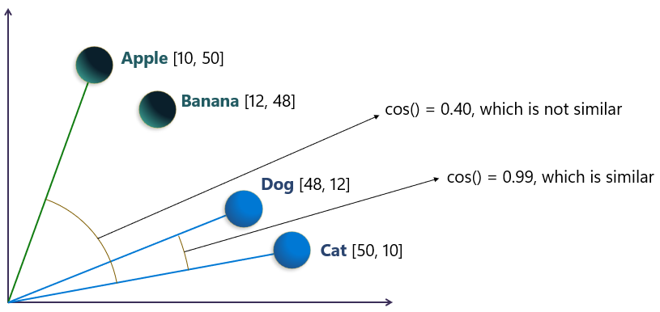
Tokens, Vectors, and Embeddings
The embedding is a list of tokens converted into numbers. Each token has a token ID, and we can create a list (or array) of these token IDs.
Each token ID ties back to a specific vector in multi-dimensional space.
This is what the large language model uses to perform its work.
Retrieval Augmented Generation
Retrieval Augmented Generation (RAG) is a pattern for sending local information to a language model for analysis.
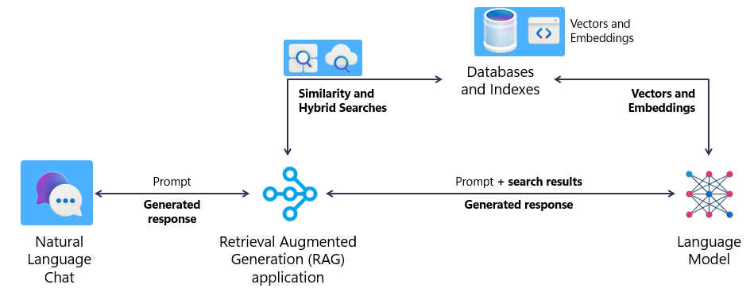
Agenda
- The Basics of Azure OpenAI
- An Overview of Semantic Kernel
- Trying out Semantic Kernel
- Semantic Kernel in Practice
Semantic Kernel
Semantic Kernel is an open-source library designed to build AI agents and integrate them into your applications.
Semantic Kernel supports .NET (quite well), Python (fairly well), and Java (not that well). It is a competitor to LangChain and serves some of the same use cases.
Semantic Kernel - The Kernel
The kernel is the central focus, gaining access to inputs and outputs at each step of the process.
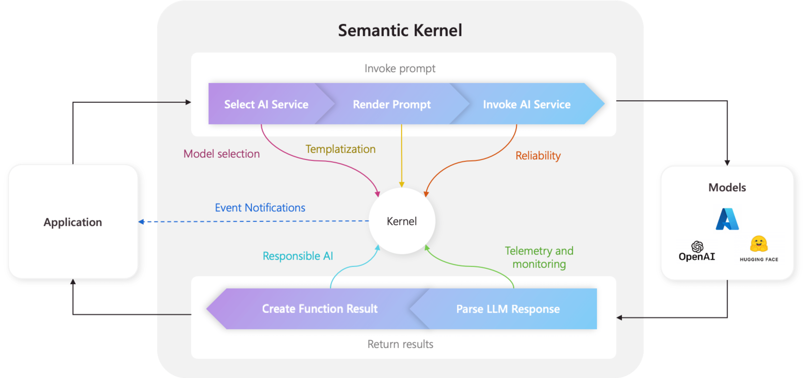
Semantic Kernel
The architectural motif of Semantic Kernel is a plug-in model.
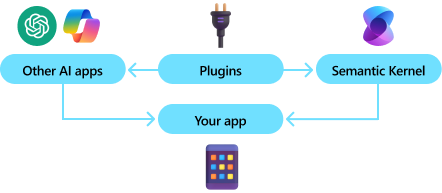
Semantic Kernel
Plugins are a way of encapsulating your existing APIs and code to allow an AI engine to know what code to execute in order to satisfy your request.
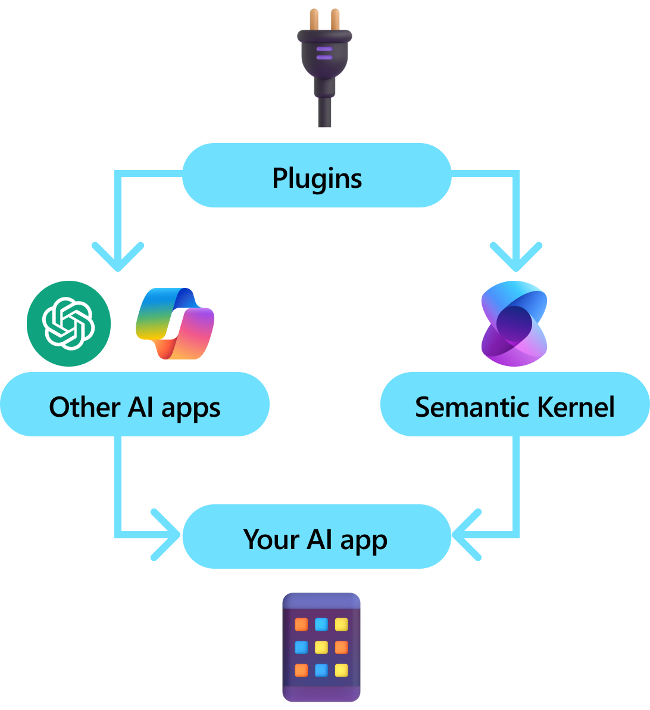
Semantic Kernel - The Planner
Semantic Kernel uses function calling as the primary mechanism for planning and execution of tasks.
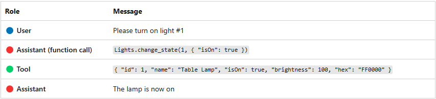
Semantic Kernel - An Example
Semantic Kernel can chain together a set of commands in order to satisfy a user request.
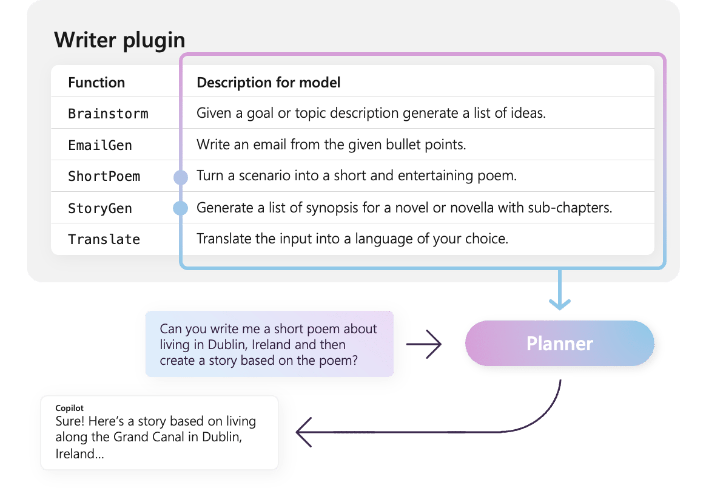
Agenda
- The Basics of Azure OpenAI
- An Overview of Semantic Kernel
- Trying out Semantic Kernel
- Semantic Kernel in Practice
What We'll Do
- Review a .NET console application
- Perform simple function calling using Semantic Kernel
Demo Time
Agenda
- The Basics of Azure OpenAI
- An Overview of Semantic Kernel
- Trying out Semantic Kernel
- Semantic Kernel in Practice
The Use Case
Contoso Suites is a luxury hotel chain with properties in seven countries. They have worked with Azure OpenAI before and have created a simple "chat with your data" application using the RAG pattern.
They want to extend their existing C#-based Web API service to become "smarter" and would like to see what Semantic Kernel can do to help.
What We'll Do
- Review the existing Streamlit dashboard and chat with data
- Configure function calling in Web API
- Perform function calling in Streamlit
- Develop a maintenance copilot
Demo Time
Wrapping Up
Over the course of this talk, we have learned what Semantic Kernel is, how it ties in with Azure OpenAI, and how we can extend an existing .NET Web API using Semantic Kernel.
Wrapping Up
To learn more, go here:
https://csmore.info/on/sk
And for help, contact me:
feasel@catallaxyservices.com | @feaselkl
Catallaxy Services consulting:
https://CSmore.info/contact